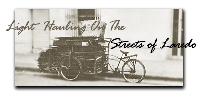

The Laredo I'm talking about-the one in the song-is in Texas. There's a Nuevo (new) Laredo in Mexico, across the Rio Grande, and its American counterpart is strongly influenced by Mexican customs and language. So it happened that I was able to photograph a "Mexican pickup" without crossing the border.
The "Mexican pickup" used to be a burro but is now the mechanical device you see in the picture. It's probably cheaper to run than a burro and two-wheeled cart, and may even be faster. One thing it certainly is: versatile.
My photo was taken after business hours, while the garbage trucks were working the downtown area. The machine's owners were harvesting the cardboard boxes, papers and metal objects put out with the trash, since these items have some resale value. I've seen the same vehicles hauling firewood, stock feed, washing machines, refrigerators and even a barrel of water which probably weighed over 400 pounds. Down in the interior of Mexico they're used to deliver all kinds of things . . . and over on the coast I saw people harvesting the fields with such "pickups". The wife and children would help get the contraption out of the soft earth by pulling on ropes tied to the front end until a road or trail was reached.
The model in the picture has the load box connected to the front fork, using the regular pivot. When a heavy, compact object is loaded, the front wheels are blocked and a man's weight used to "heist" the back wheel off the ground. The load is then ramped up the inclined floor past the center of gravity, so that the rear end drops back to the original position. Since the floor is usually below the center of the wheels and well braced, the result is a versatile one-man delivery system.
In Mexico some vehicles of this type are quite modern, with 10-speed derailleurs and even motorcycle wheels under the load. Many owners there cut the bicycle frame a few inches back of the fork pivot, build a new pivot which is truly vertical and add more frame bracing to the floor of the freight box from the chain crank bearing. Such modified versions are shorter-coupled and allow the driver to stand up on the pedals and still steer by holding onto the frame of the box. Some are fitted with bench seats so that two people can ride in front. These have less frontal overhang, past the wheel axles and won't tip up in loading.
The Laredo units depend upon their regular coaster brakes only. I saw one parked on the street with the front wheels edged against the curb. Somehow it got away and was trundling downhill when passers-by caught it and held it for the owner, who was puffing along behind. Mexicans are helpful people, and the rescue party expected no more than " Muchos gra cias " and the usual smile. Still, I think such vehicles should have cable brakes to the front wheels and some kind of parking brake. I'm sure they do in the mountainous areas of Mexico, but it didn't occur to me to look.
I can see a market developing for such rigs in the United States as gasoline and automobiles get more expensive. Meanwhile, boys might use them after school to haul groceries to people who can't get to the store. They'd be ideal, too, for delivering the daily paper. The ad sections are getting so bulky that a regular bike will hardly carry enough for a whole route. I'm sure the versatile "Mexican pickup" could be put to many other uses right now . . . and in the future, it may become as indespensable to us as it is to our southern neighbors.
|
 |
|
|